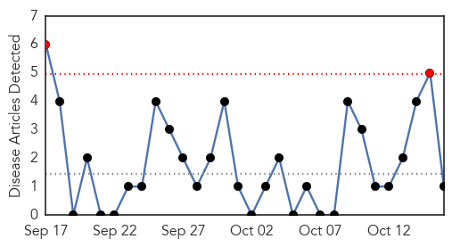
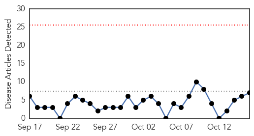
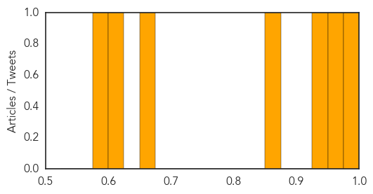

Hepatitis
30-Day Web Trend
2 alerts, 0 warnings

30-Day Twitter Trend
0 alerts, 0 warnings

Article Locations
Article Confidences

Top Articles:
Top Tweets:
-
No tweets found for Oct 16, 2014
Cholera
30-Day Web Trend
0 alerts, 0 warnings

30-Day Twitter Trend
0 alerts, 0 warnings
Article Locations
Article Confidences
Top Articles:
- 0.997
- Haiti making good progress in health but challenges remain
- 0.959
- Dannex Limited assist Health Service
- 0.931
- Cholera epidemic: 22,000 cases recorded, 170 dead
- 0.860
- Focus efforts on tackling poor sanitation
- 0.668
- Cholera Claims 8 In Adamawa
- 0.618
- UN envoy calls for funding baked by government action peace successes in troubled Sahel
- 0.593
- UN envoy calls for funding backed by government action, peace successes in troubled Sahel
Top Tweets:
- 0.509
- Cholera struck post vandalization of solar borehole MT: 8 dead by cholera in AdmawaState, Nigeria http://t.co/U6cgwrez9Y